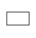

ТОПЛИВНАЯ СИСТЕМА (для моделей с DPF) > СХЕМА СИСТЕМЫ |
| СХЕМА ЦИРКУЛЯЦИИ ТОПЛИВА |
| *1 | Датчик давления топлива | *2 | Топливная система Common Rail |
| *3 | Клапан сброса давления | *4 | Нагнетающий топливный насос |
| *5 | Клапан регулирования всасывания | *6 | Электронный блок привода форсунок |
| *7 | ECM | *8 | Топливная форсунка |
| *9 | Охладитель топлива | *10 | Топливный фильтр |
| *11 | Топливный бак | *12 | Датчик температуры топлива |
 | Топливная магистраль высокого давления |  | Магистраль возврата топлива |
|  | Трубопровод всасывания топлива | - | - |
| СХЕМА СОЕДИНЕНИЙ ТОПЛИВНОЙ СИСТЕМЫ |
Так как топливная система Common Rail содержит топливо под высоким давлением, она обеспечивает высокое давление впрыска топлива.